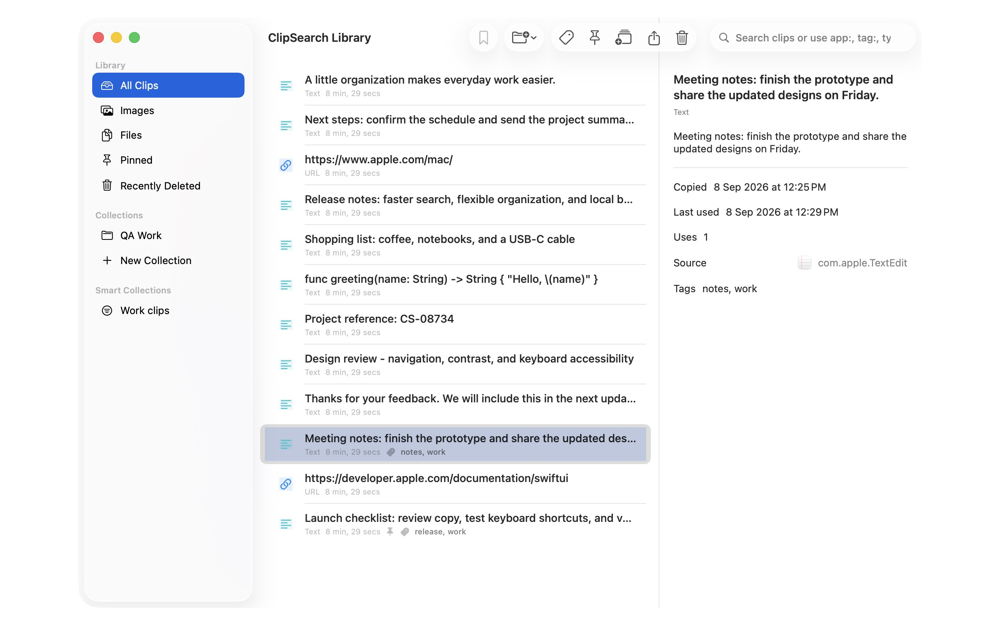

MACOS 14 OR LATER · USER GUIDE
ClipSearch for Mac
Find something you copied. Put it back to work.
ClipSearch keeps a searchable clipboard history in your Mac's menu bar, with a Library for organizing longer-lived work. Local history is free; Pro adds unlimited organization and optional encrypted iCloud sync.
Updated September 9, 2026 · Version 1.1.2. Some fixes described below require the latest build.
Start with one copied sentence
- Launch ClipSearch. Look for its clipboard icon in the macOS menu bar, not a permanent main window.
- In TextEdit or another app, copy a harmless sentence with Command-C.
- Click the ClipSearch menu-bar icon, or press the default Command-Shift-V shortcut.
- Click the clip to put it on the system clipboard. Return to the destination app and press Command-V.
Selecting a history clip copies it; it does not automatically type into another app. Use the History, Pinned, Snippets, and Queue sections to switch workflows.
Make it comfortable
Open Preferences using the gear icon. Under Appearance, choose Compact for one-line rows or Verbose for metadata and actions. Hover a clip for its preview and an action icon for its description. Choose up to three hover actions under Verbose Row Shortcuts.
Enable Launch ClipSearch at login for everyday use. You can change or disable the global shortcut. Remember last search controls whether reopening the panel keeps your previous query.
Find the right clip
Search the original content, custom titles, tags, and file paths. Results are ranked for relevance, with a short typing delay to keep input responsive. Clear the query to return to recent history. The content filter narrows History to All, Text, Images, or Files.
| Search | What it finds |
|---|---|
invoice | Clips matching the word in searchable text or metadata. |
tag:work | Clips tagged work. |
app:Safari | Clips matching Safari as the recorded source application. |
type:image | Image clips. Use type:file for file references. |
is:pinned | Pinned clips. |
collection:"Project Notes" | Clips assigned to that collection. |
before:2026-09-01 | Clips copied before September 1, 2026. |
after:2026-09-01 | Clips copied on or after September 1, 2026. |
tag:work invoice | A text search narrowed to work-tagged clips. |
Use dates in YYYY-MM-DD format. A source-app filter depends on the source information captured with a clip.
Pins, titles, tags, and collections
Keep a clip close
Open a clip's action menu and choose Pin. Find it again in Pinned. Choose Edit title and tags to give it a recognizable label and searchable tags; this changes its metadata, not the original clipboard text.
Create a collection
- Open Library from the menu-bar panel.
- Choose New Collection in the sidebar, enter a name, and create it.
- In All Clips, select the clips you want. Use the folder-plus toolbar menu and choose your collection.
- Click the collection in the sidebar to see its members.
Collections organize references to clips; they are not copies of your files.
Save a search as a smart collection
Search in Library, for example tag:work. Click the bookmark toolbar button, name the search, and save it. It appears under Smart Collections. Opening it reruns the saved query so matching clips can change over time.
The Library: work with more than one clip

The sidebar separates All Clips, Images, Files, Pinned, Recently Deleted, Collections, and Smart Collections. Selecting one clip shows its contents and metadata in the inspector; unlike the menu-bar panel, selection here does not immediately copy it.
- Command-click to select individual rows, or Shift-click to select a range.
- Use the toolbar to add to a collection, tag, pin, add to the queue, export, or move the selection to Recently Deleted.
- Open Recently Deleted to restore a clip you removed by mistake.
Latest-build behavior: Command-D and right-click > Move to Recently Deleted apply to the full selection in the updated Library. If your build deletes only the clicked row, use the toolbar trash button and update when a newer build is available.
Snippets, paste queue, and text tools
Save reusable text
Open a text clip's action menu and choose Save as Snippet. Give it a name, review the content and tags, and save. In Snippets, select it to copy its saved text, then paste with Command-V. Snippets are reusable text, not automatic text-expansion triggers.
Prepare a sequence
Add clips with Add to Paste Queue. Open Queue and choose Paste Next to place the next clip on the system clipboard and remove its queue entry. Switch to the target app and press Command-V, then repeat. Queue actions do not automatically fill fields in other apps.
Transform without changing the original
Use Copy transformed text for uppercase, lowercase, trimmed text, formatted JSON, or compact JSON. JSON formatting needs valid JSON input. For detected color values, use the available HEX, RGB, or HSL copy actions. Supported rich-text clips preserve their formatting when restored.
Images, files, and folders
A small, configurable image history
Copy an image to capture its supported image representation. Use the Images filter or the Library Images section to find thumbnails and previews. Image history defaults to the latest 10 images; Preferences > Retention lets you choose 0 to 100. Zero disables image storage.
Image originals and thumbnails are stored locally as separate media files, not inside the SQLite database. There is a 20 MB per-image limit and a 500 MB total image-storage guard. Retaining an image in clipboard history is not a substitute for saving the original.
File references, not duplicate files
Copy a file or folder in Finder to capture a reference. ClipSearch stores its path and access reference, not the complete file or folder contents.
- Click a file/folder row in the menu-bar panel: copy its full path as plain text, in both Compact and Verbose modes.
- Copy File Path / Copy File Name: choose the full path or only its name. Multiple paths are separated by newlines.
- Reveal in Finder: locate the original item. Library also offers an Open action.
- Copy File Reference: explicitly restore the file reference for a destination that accepts files, rather than text.
If an original was moved, deleted, or is inaccessible on another Mac, opening or restoring its file reference may fail. Copying its stored path as text can still work. Import and sync do not transfer the original files or their access permissions.
Control what gets captured
Local history works without a ClipSearch account. Cloud sync is off until you choose to enable it.
- Pause / Private Mode: pause from the menu-bar panel or Preferences. Choose a timer or remain private until manually resumed. New captures are rejected before storage; existing history stays intact.
- Excluded Apps: in Preferences, add an application using the app picker or its bundle identifier. Clips captured while that application is the source are excluded.
- Sensitive text: optionally block detected passwords, one-time codes, payment cards, and private keys. Detection runs on your Mac and can miss secrets; pause capture before handling highly sensitive material.
The local database is not encrypted by ClipSearch itself. It relies on your macOS account and disk protection such as FileVault. Optional cloud copies are encrypted separately with a key kept in iCloud Keychain. Read the privacy policy for the full data handling details.
Retention, storage, and recovery
Text history has no default count or age limit. In Preferences > Retention, set a maximum clip count or age. These limits move eligible clips into Recently Deleted. Configure the recovery period and restore needed items before permanent removal.
A disk budget is different: the live-storage budget permanently removes deleted clips first, then older unpinned clips, and reclaims database space. Pinned clips are exempt, so this is not a strict cap on every byte the app uses. Backups and exports are separate copies.
The Storage Dashboard shows database and media usage, clip counts, exclusions, backup information, and the last export status.
Use verified local backups
- Open Preferences > Database Backups.
- Create a manual backup, or choose daily/weekly backups and a retention count.
- To recover a previous state, choose Restore beside a verified backup and confirm.
Backup restore replaces the active database after creating a safety backup. It does not merge histories. Use export/import for merging or migration. Local backups are on the same Mac; keep an independent export somewhere safe for device loss.
Export, import, and move to another Mac
- Choose Export history from the menu-bar panel. Select an available scope: all history, pinned clips, a collection, or snippets. For selected clips, use Library's export toolbar button.
- Review the item count and estimated size in the save dialog. Save the
.clipsearcharchive to your chosen location. - Transfer the complete archive securely. It can be a package containing multiple files; do not transfer only its manifest or Assets folder.
- On the receiving Mac, choose Import history, select the archive, and import.
Import merges with the receiving Mac's history instead of replacing it and avoids duplicates by content fingerprint. Supported archives preserve clip content, image payloads, titles, tags, pins, collections, saved searches, snippets, and queue references. New exports include checksums verified during import.
Treat exports as sensitive data. They are not password-protected encrypted archives. File references do not include original file contents. Deleting local history does not erase previously exported or backed-up copies. Arbitrary exports from other clipboard managers are not guaranteed to be compatible.
Optional encrypted iCloud sync Pro
Sync is for ClipSearch installs signed into the same Apple Account. It is not a public sharing service.
- Install a cloud-enabled signed build on each Mac and activate Pro.
- Sign into the same Apple Account and enable iCloud Passwords & Keychain on both Macs.
- Open Preferences > iCloud Sync, choose Enable iCloud Sync, read the confirmation, and choose Enable and Sync.
- ClipSearch creates a verified local safety backup before the initial sync. Check status and use Sync Now when needed.
Supported clip data and organization changes merge across devices, including supported deletions. File permissions, app exclusions, device settings, and local backups do not sync.
Disabling sync or losing Pro stops future transfers and preserves local history. It does not erase the existing cloud copy. If sync is waiting for its encryption key, allow iCloud Keychain to finish syncing; do not reset Keychain or delete cloud data as a first troubleshooting step.
A message that sync is prepared but unavailable usually means the installed build does not include the required signed CloudKit configuration. Local Debug builds can intentionally disable cloud. Use the cloud-enabled TestFlight or distribution build instead.
What is free, and what does Pro add?
| Feature | Free | Pro |
|---|---|---|
| Local clipboard history and search | Included | Included |
| Pins, tags, Library, local export and backups | Included | Included |
| Collections | 3 | Unlimited |
| Saved searches / smart collections | 3 | Unlimited |
| Snippets | 10 | Unlimited |
| Encrypted iCloud sync | Not included | Optional opt-in |
Pro is offered as a monthly or annual auto-renewing subscription, not a lifetime purchase. Open Preferences > ClipSearch Pro to view the current localized prices and terms before purchasing. Prices shown by the App Store are authoritative for your country.
Use Restore Purchases with the purchasing Apple Account. Manage renewal through the subscription-management option or Apple's subscription settings. Existing local content remains accessible when Pro expires; creation beyond free limits and cloud sync require Pro.
Small and Medium tips are optional one-time App Store purchases. They do not unlock features and are not subscriptions. The available fixed amounts appear in your storefront's currency; there is no editable custom tip amount.
Keyboard reference
| Shortcut | Action |
|---|---|
| Command-Shift-V | Open the menu-bar panel globally by default; configurable in Preferences. |
| Up / Down | Move between results in the menu-bar panel. |
| Return | Copy the selected result from the panel. |
| Command-1 through Command-9 | Choose the corresponding visible result when its numbered shortcut is shown in the open panel. |
| Command-click / Shift-click | Select individual clips / a range in Library. |
| Command-D | Move the Library selection to Recently Deleted in the latest updated build. |
| Command-V | Paste the restored clipboard content in the destination app. |
When something does not work
A copied item is missing
Check capture pause, Private Mode, excluded apps, sensitive-text protection, and the active search/filter. For images, check the image-history limit. Test using harmless plain text in TextEdit.
A file pastes as text instead of a file
That is the default for file/folder row clicks in the panel. Use Copy File Reference when the destination expects an actual file reference.
The import archive is greyed out, or export fails in Downloads
Use a recent build containing the import-picker and sandbox-export fixes. Select the complete .clipsearch package. Confirm the destination is writable and has enough free space; do not dismantle or edit the archive.
I cannot see the latest behavior
Quit other ClipSearch instances, especially a local development copy, and launch the intended installed version. Local and TestFlight copies can have different fixes and cloud capabilities.
Still stuck? Visit Support or email anitagoyaldev@gmail.com with your macOS version, app version/build, and reproduction steps. Do not send unredacted clipboard history or secrets.
No matching topics. Try a shorter phrase or clear the search.